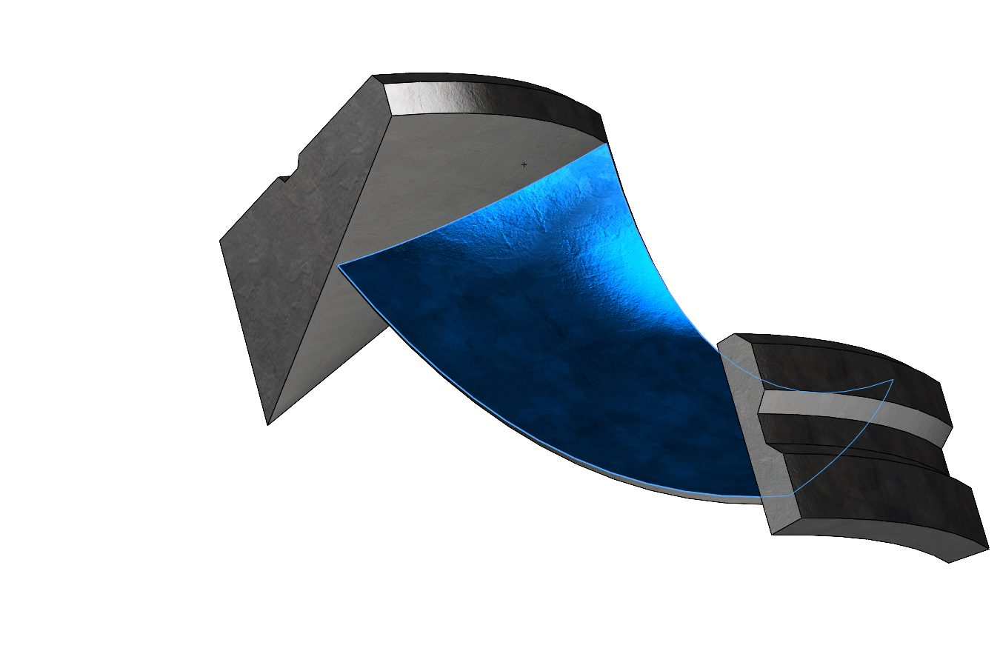

Parametric CFD of a Radial Turbine Runner
A radial-inflow turbine runner modelled in SolidWorks and driven through ANSYS Fluent as a fully parametric study — ten geometry parameters in, power and pressure drop out. The groundwork for design-space exploration and, eventually, ML-driven optimisation.

Geometry as variables, not features
Every driving dimension of the runner — hub angle, inlet and outlet diameters, blade angles at inlet and outlet, blade height — is exposed as a named parameter in the CAD sketches. Change a number, and the entire blade passage rebuilds itself.
That turns the turbine from a single design into a design space: any combination of the ten inputs is a candidate machine that can be meshed and solved automatically.

The parameter set — 10 geometry inputs, 4 performance outputs.
Flow solution & outputs
Each design variant is solved in ANSYS Fluent, with the flow field post-processed into four performance outputs: moment on the blades, angular velocity, shaft power (~117 kW) and total pressure drop (~1.7 bar) across the runner.
- Inlet diameter 1.0 m · outlet diameter 1.5 m — a hydro-scale runner.
- Blade inlet/outlet angles and hub geometry swept to study their effect on power.
- Runs animated below — the solved rotating flow field for four design variants.

Blade passage detail — SolidWorks surface model.
Four corners of the design space
CFD runs for four parameter combinations — same physics, different geometry. Watching how the flow (and the numbers) respond to each change is exactly the mapping a machine-learning surrogate can learn; this study is the manual version of what my topology-optimisation research automates.
Run 01 — baseline geometry.
Run 02 — modified blade angles.
Run 03 — modified hub geometry.
Run 04 — combined variant.